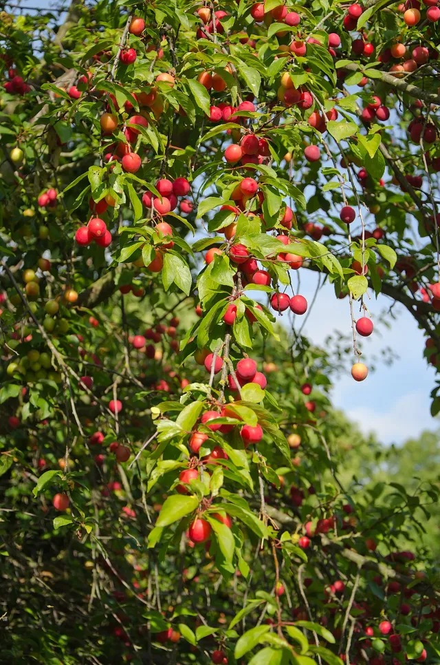

Sauces, preserves & sides
Cherry plum jam
Cherry plum jam is made with wild cherry plum.

How do you make cherry plum jam?
Golden jam of wild cherry plums.
Wild ingredients
- Cherry plum (Prunus cerasifera): in season July to August
Watch the recipe

Video: Atomic Shrimp on YouTube